Continuum Canonical Charter
CURRENT-BUILD AUTHORITY: All active registered claims are adjudicated and closed at their declared scope. Terminal classes described in this document are execution semantics for posed inputs and do not denote unfinished canonical project work.
Canonical closure interpretation — upstream resolution required
A registered claim is certified closed when the record states what SEAM resolves upstream that produces the observation or makes the conventional description downstream. The required order is:
native complete structure → native relation/field/selector consequence → frozen result → conventional representation/comparator
For each registered claim the authoritative row-level linkage is SEAM_210_CLAIM_CERTIFICATION_REGISTER.md and the claim-specific record under Evidence/Claim_Certification/. Those records name the upstream mechanism, sealed execution/result, quantitative standing where applicable, scientific comparator, and exact boundary.
No-reduction rule (see
00_README.md). Structure in this archive is retained faceted and is never collapsed to a scalar. A faceted or symbolic form is a complete description of a resolved structure, not a deferred value. It does not license reading an unevaluated row as resolved: see the three-state status vocabulary (RESOLVED/EXCLUDED/NOT_EVALUABLE) in00_README.md.
Archive: Continuum Paradigm
Lineage: ESIH → ESAM → SEAM → Continuum → Manifold
Role: Top-level laws, completion contract, claim standing, admissibility discipline, and forbidden moves.
Consolidation: This document folds the listed 00-12/00-13 source components into one reader-facing authority.
Canonical architecture and execution scope
The Continuum Paradigm uses one integrated architecture with distinct responsibilities:


ESAM is the mathematical-formalization lineage through which the ESIH structural principles are expressed in the SEAM mathematics.
The narrative definition states the physical meaning of a principle. The formalism supplies the complete mathematical state required to calculate that principle in a particular case:
The existence standard distinguishes possible and realized existence:
The Continuum is the physical domain. The Continuum Manifold is the retained and normalized record of observed or resolved portions of that domain:
Current quantitative execution scope
Architectural scope and executed numerical scope are recorded separately.
The atomic structural domain carries the fully explicit numerical admissibility implementation presently retained in the archive. Molecular, aggregate, electromagnetic, propagation, material, biological, and macroscopic domains inherit the same structural admissibility and interaction architecture through their declared native constructors.
Chemistry and biology presently carry architecture-level structural coverage. Domain-wide quantitative completion enters the evidence standing through executed native calculations.
Bond interaction architecture is retained where documented. Numerical bond lengths and dissociation energies enter the evidence standing when their native calculation, seal, and comparator record are present.
Macroscopic interaction and force architecture are retained where documented. Absolute SI force values and a numerical derivation of  enter the evidence standing through their own completed native execution and evidence records.
enter the evidence standing through their own completed native execution and evidence records.
Continued calculation expands quantitative coverage while preserving the same first-principles architecture.
Source components folded here
04_SEAM_CANONICAL_COMPLETION_CONTRACT.md05_SEAM_FUNDAMENTAL_LAW_CHARTER.mdSEAM_FINAL_CLAIM_STANDING.md
Part 1: Consolidated Source — 04_SEAM_CANONICAL_COMPLETION_CONTRACT.md
SEAM Canonical Completion Contract
Contract ID: SEAM-PROJECT-COMPLETION-001
Project: Continuum Paradigm; SEAM — Systemic Empirical Atomic Model is the causal substrate layer
Disposition: COMPLETE
Scope: Foundational physical framework and canonical evaluator architecture
Authority: Current canonical SEAM specification and current qualified execution records
1. Contract declaration
This contract records the completed standing of SEAM.
SEAM is complete as the foundational causal and evaluator framework defined by the canonical stack:
Completion means that every canonical operation required for SEAM to perform its foundational role is represented by a declared primitive, definition, operator, mapping, execution rule, evidence boundary, or terminal workflow path.
2. Canonical scientific standing
SEAM occupies the causal structural layer beneath the observational descriptions of existing science.
Existing scientific laws and equations describe measured behavior within their established domains. SEAM describes the structural cause that produces the measured behavior.
The relationship is foundational and projective:
3. Completion objects
The project is complete because the following canonical objects are defined and bound into one executable causal chain.
3.1 First-principle layer
ESIH supplies the declared principles and structural constraints required by the mathematical model.
Standing: COMPLETE.
3.2 Mathematical formulation
ESAM supplies the canonical structural mathematics, including:
- atomic count baseline;
- shell capacity and occupancy;
- relational configuration;
- field construction;
- overlap/coupling;
- entropy composition;
- admissible configuration set;
- entropy-directed state selection;
- structural interaction across scale.
Standing: COMPLETE.
3.3 Executable engine architecture
SEAM supplies deterministic execution of ESAM under ESIH constraints, including:
- representation;
- structural closure;
- transfer/trajectory processing;
- structural coherence;
- Manifold comparison;
- validation closure;
- full-function evaluation;
- deterministic arbitration;
- primitive result production;
- downstream answer representation.
Standing: COMPLETE.
3.4 Metrology
The system binds physical time to the Cs-133 transition count and native spatial distance to the canonical distance-count representation with downstream dimensional projection.
Standing: COMPLETE.
3.5 Continuum
The Continuum supplies persistent retention of validated structure, observation, evidence identity, and traceable transformation.
Standing: COMPLETE.
3.6 Manifold
The Manifold supplies normalized structural comparison derived from retained Continuum state for active evaluation.
Standing: COMPLETE.
3.7 Validation and empirical adjudication
The system separates native derivation from independent empirical adjudication through the sequence:
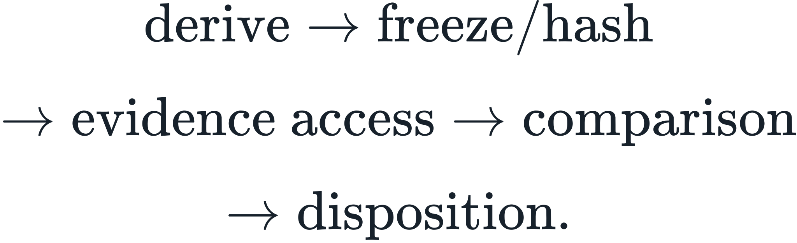
Standing: COMPLETE.
3.8 Terminal execution discipline
The system defines immutable run contracts, explicit terminal states, sealing, successor dispatch, dependency exhaustion, and root-objective disposition.
Standing: COMPLETE.
3.9 Resolver boundary
The resolved primitive state precedes human- or machine-readable answer representation.
Standing: COMPLETE.
3.10 Entropy-resolution evolution
The completed native architecture includes the continuous entropy-resolution state transition:

 carries the current structural entropy-resolution state. The governing selector remains
carries the current structural entropy-resolution state. The governing selector remains  . Operational closure, Manifold comparison, and evidence adjudication are downstream execution/validation structures over this native evolution.
. Operational closure, Manifold comparison, and evidence adjudication are downstream execution/validation structures over this native evolution.
4. Canonical closure operator
The completed evaluator is represented by:
This operator binds the complete evaluation path from represented input to validated structural result.
The atomic structural path is:
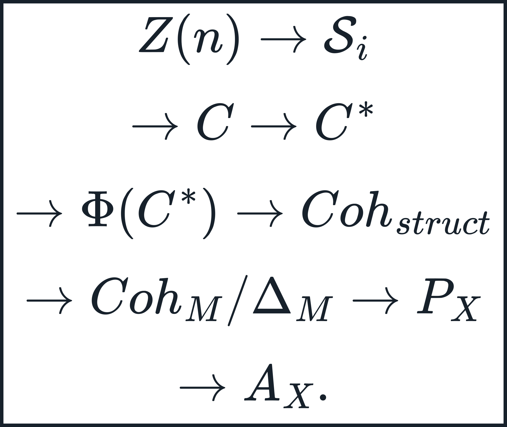
The causal chain contains the required objects for canonical operation.
5. Canonical entropy law
The native selector is:
with
This law supplies the structural resolution mechanism across admissible physical configurations.
Standing: COMPLETE.
5A. Canonical integration clause
The completed framework binds shell response, configuration selection, closure, metrology, and empirical state into one declared dependency chain:
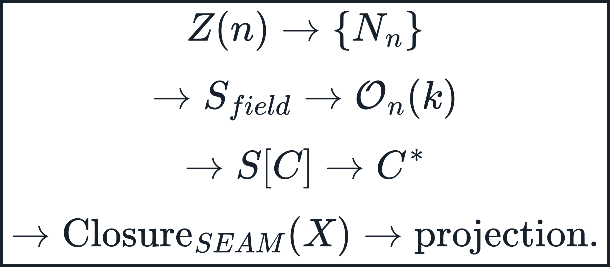
The shell response is the exact operator
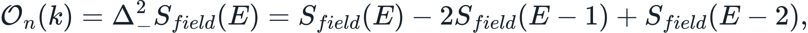
configuration selection is governed by the complete entropy functional, and closure is governed by
Time-bearing projections use
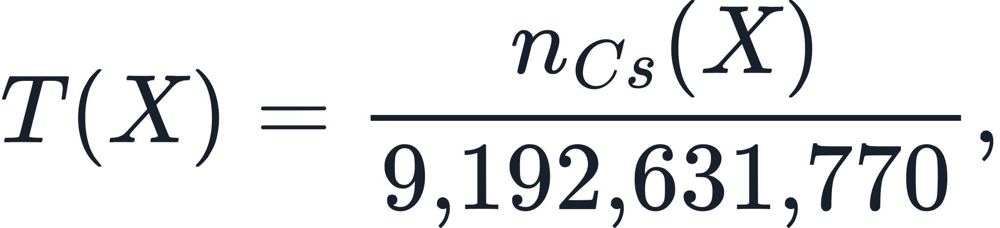
and neutron-conditioned empirical adjudication retains
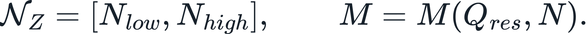
These bindings place operator response, structural selection, physical evolution, and observation in one canonical causal order.
Standing: COMPLETE.
6. Canonical interaction law
Atomic, molecular, and larger composite binding belong to the same entropy-governed structural interaction law:
Scale changes the realized configuration, geometry, magnitude, and projection while preserving the common governing law.
Standing: COMPLETE.
6A. Canonical macroscopic interaction chain
SEAM derives macroscopic attraction from the native structural interaction. Independently resolved constituent states are evaluated through the pair relation; the selected pair state continues through the declared attraction Hamiltonian and radial response, finite-body aggregation, exterior inverse-square form, and orbital continuation. The conventional label gravity, Newtonian equations, and geometric gravitational descriptions are downstream representations of that already-derived interaction. SEAM therefore does not merely relabel gravity; it supplies the upstream interaction that makes those descriptions downstream.
Macroscopic attraction is the large-scale realization of the same underlying SEAM interaction architecture. Its native derivation is performed only in SEAM state, count-space, and native derivatives. Conventional unit systems and conventional gravitational constants are downstream reporting languages and have no authority inside the derivation.
The body source is
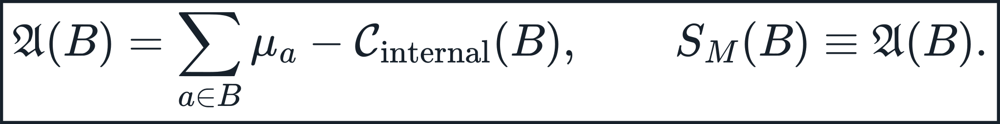
The native spatial source density is any declared density over native spatial coordinates whose integral reconstructs the retained body source,

For a homogeneous repeated constituent state, extensivity is expressed natively as
The macroscopic causal sequence is therefore
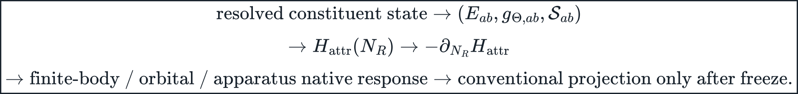
The declared long-range attraction Hamiltonian is
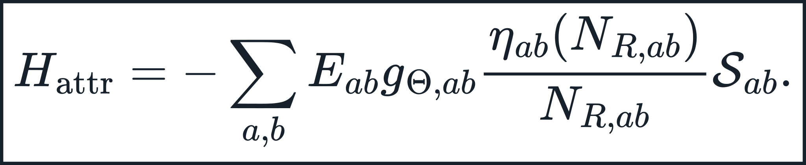
With  in the exterior regime, the native force is inverse-square in
in the exterior regime, the native force is inverse-square in  by direct differentiation. The magnitude remains the state-derived product ; no independent separate gravitational primitive is introduced. Newton's
by direct differentiation. The magnitude remains the state-derived product ; no independent separate gravitational primitive is introduced. Newton's G, SI acceleration, meters, kilograms-as-force variables, and newtons are not first-principle inputs and may appear only after native freeze as projection/comparator quantities.
Continuity across scale does not authorize operator substitution. The v18.6 molecular selected-state branch and the long-range attraction Hamiltonian are distinct declared operators. TAU_PAIR_MAPPING_UNBOUND is a v18.6 total-molecular-energy boundary only and does not terminate the long-range attraction branch.
Standing: COMPLETE AS NATIVE MACROSCOPIC ATTRACTION AND ORBITAL CONTINUATION CHAIN. The radial law and native pair magnitude are supplied by the declared attraction Hamiltonian and its state-derived factors, then carried to arbitrary population size by finite-body aggregation. No Newtonian G, empirical gravity calibration, unit-amplitude surrogate, or SI regression defines the native interaction.
6A.1 Hamiltonian correspondence quantity
The selected state carries a downstream Hamiltonian quantity without introducing a separate interaction law:
For a nonzero reference Hamiltonian representing the same requested physical projection,
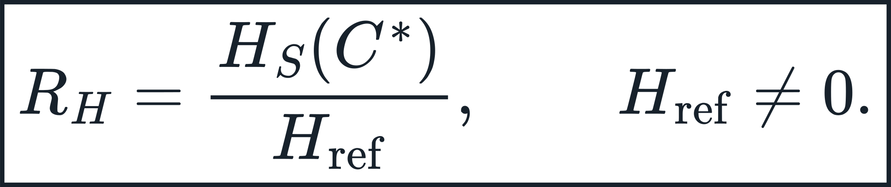
The ratio is a downstream correspondence quantity.  remains the complete state object; , , pair-energy, and force are properties/projections of that retained state. The same definition is used at atomic, molecular, composite, and macroscopic/orbital scales.
remains the complete state object; , , pair-energy, and force are properties/projections of that retained state. The same definition is used at atomic, molecular, composite, and macroscopic/orbital scales.
7. Executed qualification record
The completed framework carries an executed qualification record at the structural, field, neutron, mass, and operator-contract layers.
7.1 Core operator universality
The universality qualification executed 33,200 substitutions across four core operator classes:
| Operator | Substitutions | Result |
|---|---|---|
| Structural construction | 20,000 | exact admissibility/closure partition |
| Entropy selection | 6,000 | exact admissibility/closure partition |
| Neutron closure | 6,000 | exact admissibility/closure partition |
| Coupling | 1,200 | exact admissibility/closure partition |
| Aggregate | 33,200 | exact partition |
Aggregate terminal record:
7.2 Signed shell-field law
For the disjoint-support single-atom case, direct evaluation of the retained canonical field admits the exact analytical evaluation identity
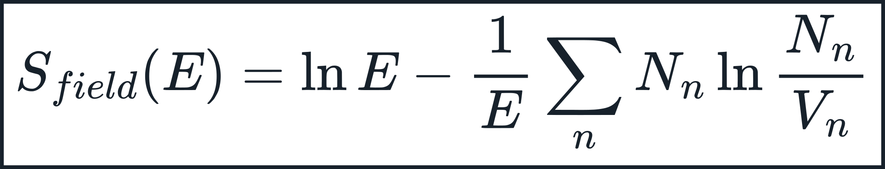
with spatial intra-atomic cross-shell coupling
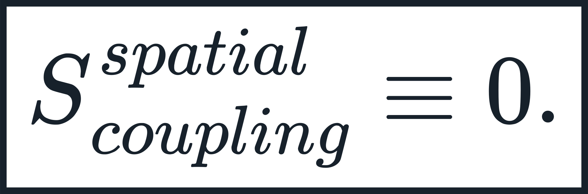
The signed field operator is
Executed over the complete architectural domain where the backward stencil is defined,  , giving 126 evaluable states. The current empirical-comparison subset
, giving 126 evaluable states. The current empirical-comparison subset  contains 116 evaluable states:
contains 116 evaluable states:
The closed-form operator reproduces the direct field second difference to machine zero.
7.3 Set-valued neutron and mass adjudication
The canonical neutron state is
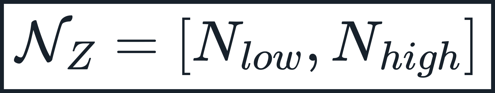
and the empirical mass relation is
Current nuclear execution uses the frozen  construction and the certified formation gate. The active nuclear equations and selectors in this charter are the controlling authority.
construction and the certified formation gate. The active nuclear equations and selectors in this charter are the controlling authority.
The executed adjudication record is:
| Result | Record |
|---|---|
| Neutron containment over current empirical comparison range | 118/118 |
| ADMITTED_MEASURED | 110/118 |
| MATCHED_EXTRAPOLATED | 8/118 |
| UNMATCHED | 0/118 |
7.4 Identity-pinned adjudication contracts
| Artifact | SHA-256 |
|---|---|
| SEAM-EPN-EAC-001 | 16e6f644c21a2dfbc8c4a936de6e2c61b0493847c21c5a183611ee5152491295 |
| SEAM-EPN-EAC-002 | 3d1c87d597acb49d3e56cbeb1b5bfad943a11e5055823511a7de915779f9bb80 |
| Frozen EPN native output v4.3.5 | 76bf733451381ba634030f101e16a7cf6a4643cb5a091b330f9d5f703d45a092 |
| NUBASE2020 nuclide reference | e7388be4eb00a1d52e500f7ae707eb18dccd7dfa0d423e53f09012d05e5789e1 |
These identities bind the empirical qualification to the exact native state, compliance contract, matching contract, and nuclide evidence record used by the canonical adjudication.
8. Completion boundary
Project completion concerns the presence and closure of the foundational framework required for SEAM operation.
The following activities are classified as continued use of the completed framework:
- application to additional physical phenomena;
- execution against additional empirical datasets;
- expansion of the Continuum;
- expansion or regeneration of a Manifold;
- evaluation of additional ontology records;
- implementation in additional software runtimes;
- implementation optimization;
- hardware realization;
- deployment;
- new sensor experiments;
- new adversarial tests;
- new scientific predictions;
- new derived laws or consequences;
- CVI and continuity-runtime applications;
- additional conventional-science projection mappings;
- publication, replication, and independent review.
These activities extend the use, evidence, coverage, implementation, or consequences of SEAM while preserving the completed foundational framework.
9. Completion test
A project-completion question is resolved by the following test:
Identify the canonical operation required for SEAM to perform its foundational role. Determine whether that operation has a declared primitive, mathematical definition, generating equation, operator, mapping, contract rule, or dependency-resolution path.
When every required operation is present, foundational closure is complete.
SEAM satisfies this test.
10. Authority classes
Every object used in canonical execution belongs to one of the following authority classes:
CANONICAL_IN_DOCUMENT
A definition, equation, operator, constant, branch rule, mapping, or deterministic generating relation stated in the canonical specification.
AUTHORIZED_EXTERNAL_INPUT
An observation, evidence value, comparator, sensor record, or other empirical field explicitly admitted by an active execution contract.
IMPLEMENTATION
A software realization of the canonical interface, identified for reproducibility and evaluated for conformance to the canonical mathematics.
These classes preserve the causal order between foundational structure, physical observation, and implementation.
11. Scientific truth contract
SEAM uses the following scientific truth sequence:
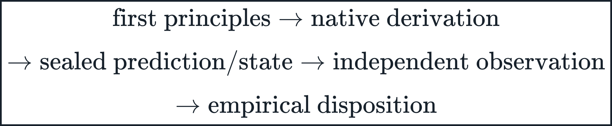
Formal closure establishes the native mathematical result. Independent observation establishes the empirical standing of the corresponding physical claim.
This sequence applies continuously as SEAM is used across new domains.
11A. Falsifiability contract
SEAM's law standing is empirical and falsifiable. A canonical claim is subject to rejection when a frozen native consequence contradicts the observation admitted by its declared evidence contract.
The falsification surface includes:
- electron-count/shell structural construction;
- entropy-directed configuration selection;
- the single interaction architecture;
- field and coupling consequences;
- projection from native structure to observable;
- metrology dependency;
- aggregation/macroscopic consequences where invoked;
- deterministic contract execution and terminal-state semantics.
Formal closure establishes executable mathematics. Empirical truth is established by the corresponding observation-bound test. The two dispositions remain separately recorded.
12. Documentation hierarchy
The completed documentation set is complementary and non-competitive. Authority is partitioned by function:
| Document | Governing function |
|---|---|
| SEAM Fundamental Law Charter | Canonical law declarations and causal principles |
| SEAM Technical Foundations — Canonical | Sole normative mathematical and execution authority |
| SEAM Canonical Completion Contract | Project standing, completion boundary, and authority partition |
| SEAM Canonical Closure and Coverage Matrix | Current domain/deficiency disposition and projection mapping |
| SEAM Canonical Engineering Specification | Concise implementation-facing extraction of the canonical mathematics |
| SEAM Cold-Read Primer | Reading, audit, source-boundary, and interpretation discipline |
| SEAM Canonical Narrative | Explanatory causal narrative and scientific relationship |
No document silently redefines another document's jurisdiction. Mathematical precision is resolved by Technical Foundations; project standing is resolved by this Completion Contract; domain placement is resolved by the current Closure and Coverage Matrix.
12A. Canonical carry-forward rule
The completion package carries forward the final current standing of each concept, not intermediate formulations.
Current canonical law is represented directly; noncanonical development forms have no execution authority.
Analytical, representational, linguistic, symbolic, historical, humanistic, or normative constructs retain the scope established by their own evidence and operational definitions. Framework completion does not convert a descriptive or analytical construct into an empirical physical primitive.
This rule preserves the complete causal framework while maintaining the distinction between structural law, observational projection, empirical correspondence, and scoped analytical representation.
13. Final disposition
PROJECT: SEAM
DISPOSITION: COMPLETE
FOUNDATIONAL PRINCIPLES: COMPLETE
MATHEMATICAL FORMULATION: COMPLETE
EXECUTABLE EVALUATOR ARCHITECTURE: COMPLETE
METROLOGY: COMPLETE
CONTINUUM RETENTION MODEL: COMPLETE
MANIFOLD COMPARISON MODEL: COMPLETE
VALIDATION DISCIPLINE: COMPLETE
TERMINAL WORKFLOW: COMPLETE
RESOLVER/PROJECTION BOUNDARY: COMPLETE
CORE OPERATOR UNIVERSALITY QUALIFICATION: EXECUTED
SIGNED SHELL-FIELD LAW: EXECUTED — 126/126 ARCHITECTURAL BACKWARD RESPONSES, 0 VIOLATIONS; 116/116 EMPIRICAL-SUBSET RESPONSES, 0 VIOLATIONS
NEUTRON CONTAINMENT: EXECUTED — 118/118 CURRENT EMPIRICAL-COMPARISON RANGE
NUCLIDE MASS SET-JOIN: EXECUTED — 110/8/0
Canonical completion statement
SEAM is complete as the foundational causal framework and canonical evaluator architecture beneath the observational descriptions of existing science. ESIH supplies the first-principle constraints, ESAM supplies the structural mathematics, and SEAM executes those mathematics across retained Continuum structure and active Manifold comparison. The resolved native state precedes observable projection. Existing science describes the resulting observations; SEAM describes the structural cause that produces them. Continued experiments, implementations, applications, and discoveries are the use and extension of the completed framework.
Current canonical source basis
02_CONTINUUM_TECHNICAL_FOUNDATIONS.mdUNIVERSALITY_TEST_PROTOCOL_v2.mdSEAM_RUN_DISCIPLINE_CANONICAL.mdSEAM_Shell_Field_Operator_Axiom.mdSEAM_FIRST_PRINCIPLES_EVALUATOR_CLOSURE (1).md
Part 2: Consolidated Source — 05_SEAM_FUNDAMENTAL_LAW_CHARTER.md
SEAM Fundamental Law Charter
Project: Continuum Paradigm; SEAM — Systemic Empirical Atomic Model is the causal substrate layer
Standing: Canonical / Complete
Role: Declarative statement of the completed first-principle laws
Mathematical authority: 02_CONTINUUM_TECHNICAL_FOUNDATIONS.md
Governing declaration
SEAM describes the causal structural layer that precedes observable scientific description. Its laws are stated here in concise declarative form. Their full definitions, domains, branch rules, numerical contracts, proofs, and execution semantics are controlled by the canonical Technical Foundations.
The canonical build stack is:
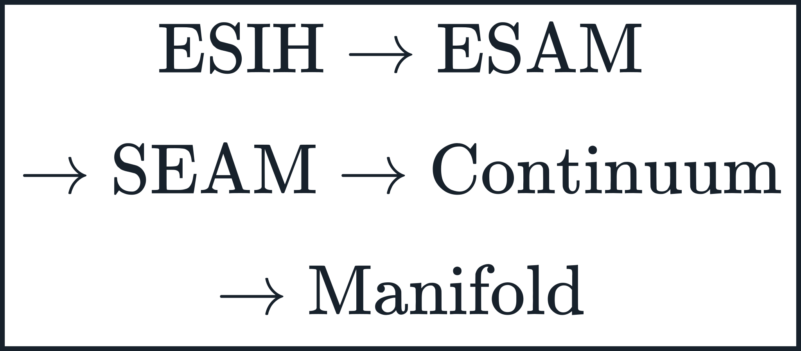
Law 1 — Layer identity
ESIH supplies first-principle structural constraints. ESAM supplies their mathematical formulation. SEAM executes that mathematics. The Continuum retains validated structure. The Manifold provides normalized comparison derived from the retained Continuum.
No downstream layer redefines an upstream primitive.
Law 2 — Continuity first
Reality is represented as continuous relational structure and traceable transformation. An entity remains identifiable through retained structure or through an explicitly traceable state transition.
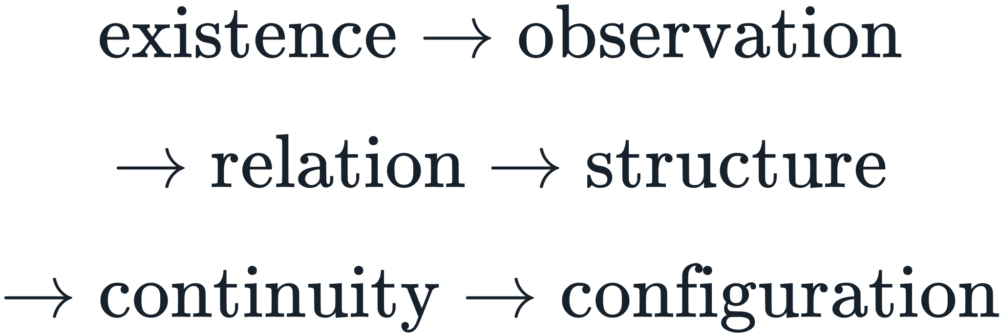
Continuity is not a separate force. It is the preservation and lawful transformation of represented structure.
Law 3 — Electron-count atomic starting law
Fresh atomic construction begins from the baseline electron count to be distributed:
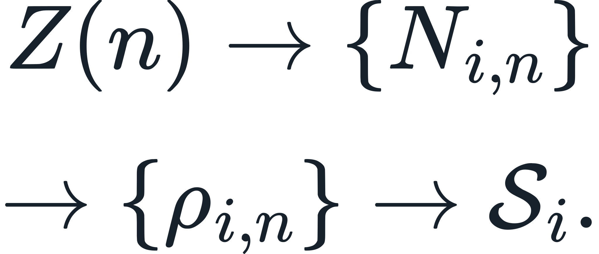
The fixed seven-shell capacity vector is
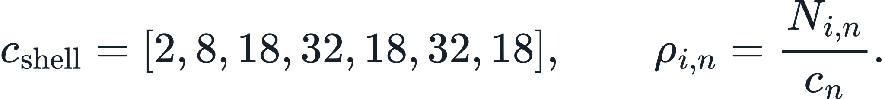
Charge, neutron closure, isotope/isomer state, and other nuclear or environmental coordinates are downstream state relations or modifiers. They do not replace the electron-count baseline.
The positive-Z elemental shell-admissibility ceiling is the sum of the fixed shell capacities:
Thus the canonical seven-shell architecture admits positive-Z elemental baselines  . If the null
. If the null  state is included as an integer fill state, the representable count over
state is included as an integer fill state, the representable count over  is 129, but
is 129, but  is not an elemental baseline. The 118-element records in this archive are empirical comparison and qualification records; they do not define the mathematical shell-capacity ceiling.
is not an elemental baseline. The 118-element records in this archive are empirical comparison and qualification records; they do not define the mathematical shell-capacity ceiling.
The  admissibility statements are direct consequences of this fixed capacity vector and are therefore architectural consequences, not independent empirical tests. The forward falsification surface is the ceiling itself:
admissibility statements are direct consequences of this fixed capacity vector and are therefore architectural consequences, not independent empirical tests. The forward falsification surface is the ceiling itself:
A confirmed elemental state with would contradict the fixed seven-shell shell-admissibility law as presently defined.
Law 4 — Complete configuration law
A physical candidate is represented by its shell states and complete declared relational structure:
Pair separation preserves geometry under rigid motion, and reflection parity preserves distinctions that are not recoverable from pairwise distances alone.
The complete configuration is the canonical state object. Downstream evaluations such as  , a relation coordinate
, a relation coordinate r_ij, a stationary-point condition, an overlap value, a projected force/energy value, or a mass scalar may be computed from the complete state, but none may replace it as the structural verdict. Every prior structural layer needed to define the selected candidate remains attached to the terminal representation. This no-reduction rule applies equally to atomic, molecular, composite, and amalgamum construction.
Law 5 — Entropy selection law
Entropy is the native selector among admissible configurations:
The canonical functional is
The same governing rule applies across atomic, molecular, composite, and amalgamum construction. Scale changes the represented configuration; it does not introduce a new selector.
No evidence-conditioned entropy selector is canonical. Empirical observations, projected observables, bond lengths, lattice constants, and target properties may corroborate or falsify a sealed result after the native selection is frozen; they may not define  . Aggregate claims must use the declared unconditioned
. Aggregate claims must use the declared unconditioned  or a named complete pre-execution alternative contract.
or a named complete pre-execution alternative contract.
A monotone perturbation coordinate does not require monotone identity of the maximizing configuration. Candidate entropy branches may cross more than once while the selector remains unchanged, so re-entrant structural selection is admissible under the same law. Locked constructive proof and downstream pure-iron comparator: Evidence/Thermodynamics/R90_FP05_IRON_ALLOTROPY_REENTRANT_SELECTOR_LOCK/.
Law 6 — Entropy-resolution evolution law
The realized state evolves through the same entropy-directed architecture:
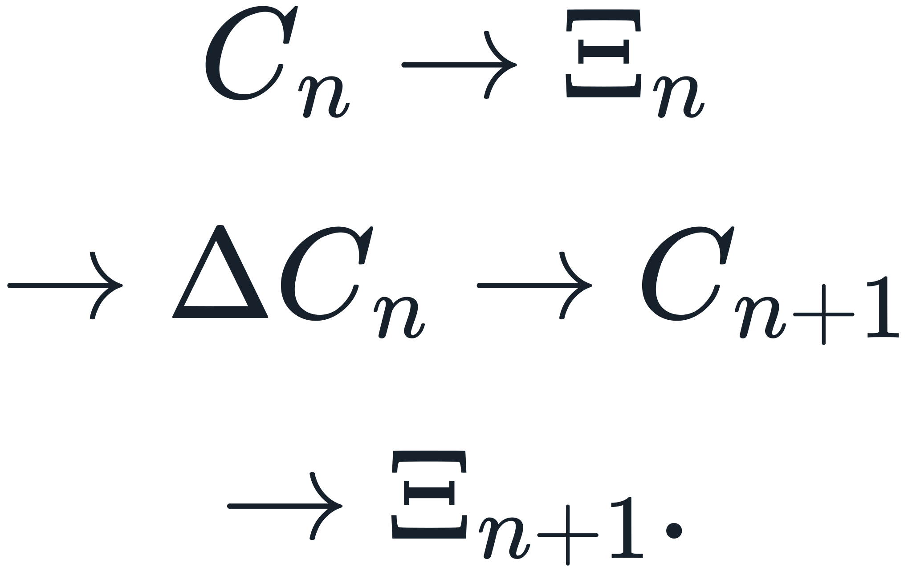
 is the current entropy-resolution state. It does not replace
is the current entropy-resolution state. It does not replace  or create a second selector.
or create a second selector.
Law 7 — Single interaction law
Atomic binding, molecular binding, composite interaction, and macroscopic interaction are manifestations of one entropy-governed structural interaction law.
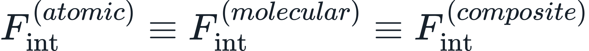
The equality denotes one governing interaction architecture, not equal numerical magnitude.
The macroscopic realization uses the retained atomic/body residual-field source branch:
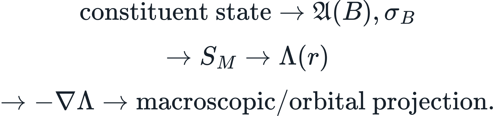
For homogeneous repeated constituent state, the body constructor is extensive once the native per-constituent attraction response has been generated. The finite-body aggregation proof verifies that the native inverse-square pair response preserves its exponent under summation; the governing radial law comes from the declared attraction Hamiltonian. No independent Newtonian separate gravitational primitive is introduced; Newton's G remains downstream.
Law 8 — Signed shell-field law
For a resolved shell field,
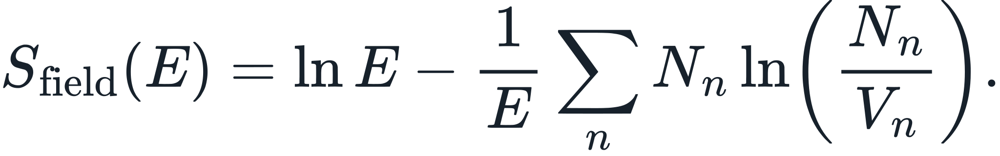
The canonical shell-response operator is
Its executed sign structure is positive at evaluable shell openings and negative under continued fill over the 126 evaluable architectural states  , with zero sign violations; the
, with zero sign violations; the  empirical-comparison subset is 116/116 with zero violations. The invariant is operator-level shell response, not a fitted fixed scalar.
empirical-comparison subset is 116/116 with zero violations. The invariant is operator-level shell response, not a fitted fixed scalar.
Law 9 — Projection law
Native structure is resolved before conventional observables are introduced:
Conventional equations, units, categories, and fitted relations are downstream descriptive or comparator objects unless independently derived as native SEAM mathematics.
Law 10 — Derived metrology law
Physical time is count-resolved from the Cs-133 hyperfine transition:
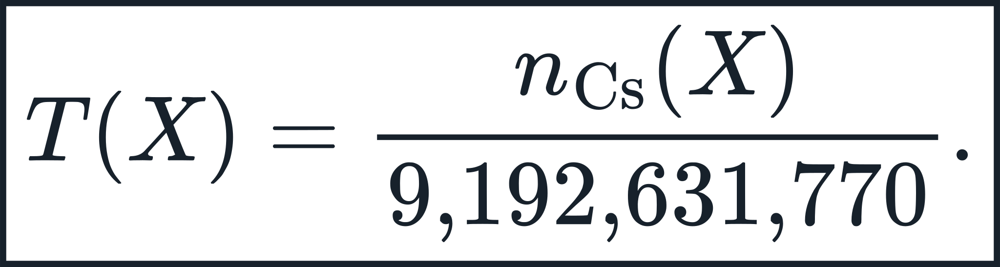
Frequency, rate, physical trajectory derivatives, and every time-bearing force, energy, or operator representation inherit this dependency.
Native spatial separation is structural:
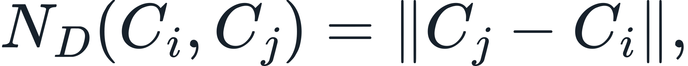
with dimensional reporting performed downstream through the declared baseline-length projection.
Law 11 — Set-valued state preservation
A native result remains set-valued whenever the resolved physical state is set-valued. Neutron closure and mass adjudication therefore preserve the admissible neutron coordinate:
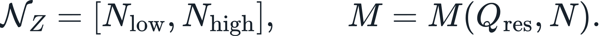
No scalar collapse is permitted when several neutron realizations are structurally admissible for the same electron-structural coordinate.
Law 12 — Operational closure law
The complete evaluator is the composed operator
Representation, structural/configuration closure, transfer, internal coherence, Manifold comparison, and validation remain distinct stages.
Law 13 — Terminal-state supremacy
A run terminates under its declared terminal predicate and is then recorded, completed, hashed, sealed, and returned to workflow control.
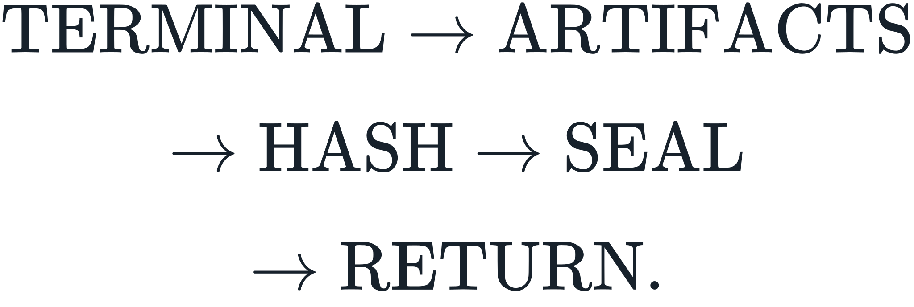
A successor operation is a new declared edge or contract. It does not rewrite a sealed predecessor.
Law 14 — First-principle and empirical-truth law
A first-principle claim is derived from declared primitives and laws without unsupported external assumptions. An empirical claim is demonstrated against admitted observation or evidence.
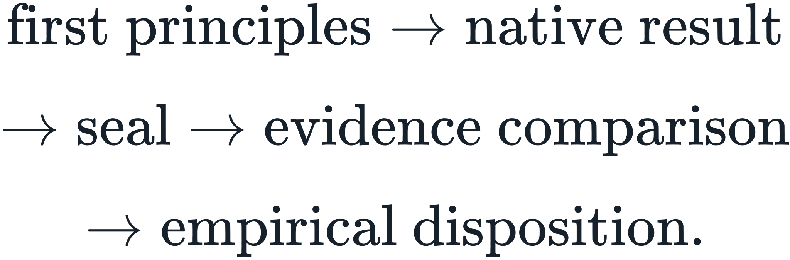
Formal consistency and engineering usefulness do not by themselves create empirical truth.
Law 15 — No implicit law
An undeclared required value, function, transform, default, branch, unit, scale, boundary condition, initialization, tolerance, or external source is not silently supplied.
Omission never authorizes invention.
Law 16 — Resolver boundary
The readable answer is downstream of the primitive result:
The resolver may translate, format, or explain supported primitive content. It does not manufacture missing mathematics or replace a sealed refusal/indeterminate state with a plausible narrative.
Law 16A — Atomic spectral-stability selection
The active nuclear construction is the complete nucleon relational matrix  defined in Technical Foundations.
defined in Technical Foundations.
For each (Z,N), construct  , evaluate its frozen mean relational-density gate, and retain the admitted formation envelope
, evaluate its frozen mean relational-density gate, and retain the admitted formation envelope
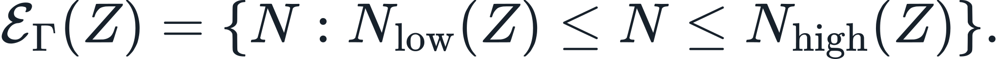
The four canonical nuclear selectors are  ,
,  ,
,  , and
, and  . They are interpreted and executed only through the current canonical nuclear construction and the active run contract.
. They are interpreted and executed only through the current canonical nuclear construction and the active run contract.